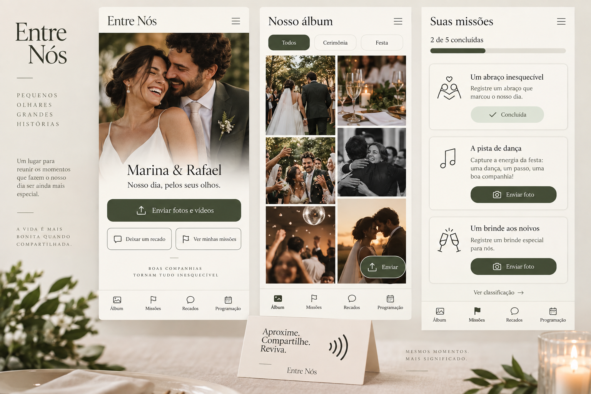

Ações / hierarquia
48 px de altura mínima. Foco visível por teclado. Uma ação principal por contexto.
Toque em uma ação para ver o retorno de demonstração.
Identidade & interface · setembro 2026
Um sistema para guardar o que se sente. A elegância de um convite, com a simplicidade de um gesto.
Explorar componentes
A fotografia conta a história. A interface dá espaço.
Uma ação principal, palavras familiares e controles generosos.
Estados claros. Sem confirmar o que ainda não foi salvo.
01 / Fundamentos
Uma paleta contida e duas vozes tipográficas. As cores abaixo são a especificação de implementação, formalizada a partir do conceito.
Cormorant Garamond · 400 / 500
Nosso dia,
pelos seus olhos.
Títulos, nomes dos noivos e mensagens editoriais.
DM Sans · 400 / 500 / 600
Compartilhe os momentos
que só você viu.
Você pode enviar várias fotos de uma vez. Se a conexão falhar, vamos mostrar o que precisa ser reenviado.
Base de 4 px. Interior: 16–24 px.
Entre grupos: 32–48 px.
Campos, botões e cartões têm raios próprios.
Pílulas sinalizam filtros e estados.
Verificação numérica das cores sólidas. Não equivale a uma auditoria completa de acessibilidade; fotos e impressões exigem validação própria.
| Par de cores | Contraste | Meta |
|---|---|---|
| ink / canvas | 13.1:1 | ≥ 4.5:1 |
| text-secondary / canvas | 5.5:1 | ≥ 4.5:1 |
| surface / olive | 8.22:1 | ≥ 4.5:1 |
| olive / sage | 6.42:1 | ≥ 4.5:1 |
| danger / danger-soft | 5.68:1 | ≥ 4.5:1 |
| warning / warning-soft | 5.74:1 | ≥ 4.5:1 |
| info / info-soft | 6.4:1 | ≥ 4.5:1 |
| border-control / surface | 4.07:1 | ≥ 3:1 |
| olive / canvas | 7.66:1 | ≥ 4.5:1 |
02 / Componentes
Exemplos interativos locais. Nenhum arquivo é enviado e nenhum dado é salvo neste guia.
48 px de altura mínima. Foco visível por teclado. Uma ação principal por contexto.
Toque em uma ação para ver o retorno de demonstração.
Filtro de demonstração: Todos.
Nunca depender apenas da cor. O champanhe é decorativo, não uma cor de texto funcional.
Arquivo ilustrativo · 4,8 MB
Pronto para simular. Nenhum arquivo real será enviado.
Ícones / traço contínuo
24 × 24 · traço de 1,5 px
Ícone funcional sempre com nome acessível.
03 / Padrões do produto
Um exemplo de missão e as regras de álbum, recados e navegação que mantêm o app coerente.
0 de 1 concluída · demonstração
Registre um abraço que marcou o nosso dia.
No app, a missão só pontua após mídia válida e aprovação.
Grade com duas colunas no celular, ordem de leitura preservada e prévias leves. No detalhe, mostrar a mídia inteira, sem recortar rostos ou alterar o original.
Pergunta → gravação → revisão → envio. Privacidade e horário de abertura aparecem antes da gravação. A câmera só é solicitada por uma ação da pessoa.
Álbum, Missões, Recados e Programação. Rótulos visíveis e área segura para não cobrir conteúdo com a barra inferior.
04 / Do papel ao celular
NFC é o acesso principal. O QR Code oferece a mesma experiência para quem prefere a câmera ou não tem NFC.
Marina & Rafael
Aproxime o celular
ou escaneie o QR Code.
A etiqueta e o QR do mesmo cartão devem conter exatamente o mesmo link. Não adicionar cadastro extra ou permissões diferentes por forma de acesso.
O quadrado ilustrativo não é um QR escaneável. O código final depende do domínio e do token reais.
05 / Implementação
Tokens, estilos reutilizáveis, fontes locais e contratos de comportamento. A documentação define o que a imagem sozinha não consegue especificar.
{kind=link}
{kind=link}